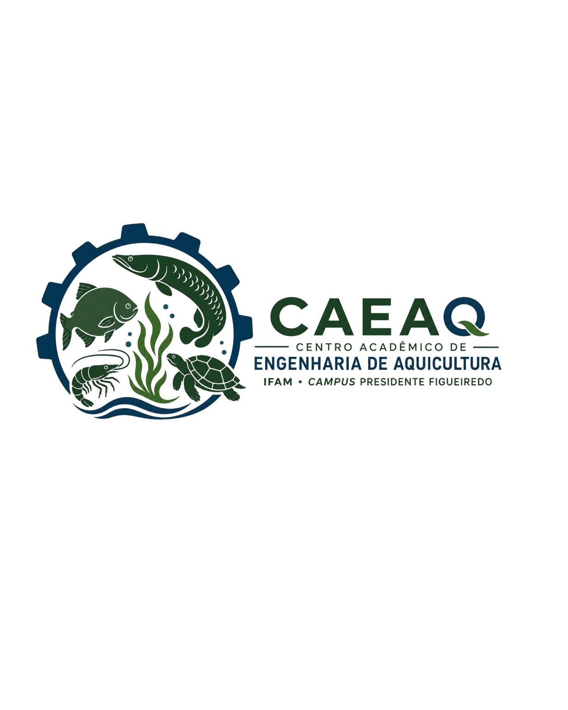

"O único curso de engenharia de aquicultura do norte"
Este é o canal oficial de comunicação do Centro Acadêmico de Engenharia de Aquicultura do IFAM – Campus Presidente Figueiredo.
Solenidade de início de semestre (aula magna) terça-feira, 28/07 ás 8h00 da manhã, bo auditório do campus.
Acesse as atas, estatutos e resoluções oficiais do CAEAQ:
Membros da gestão atual do Centro Acadêmico (IFAM - Campus Presidente Figueiredo):
Presidente: Kalyson Juan
Vice-Presidente: David Assunção
Secretária Geral: Jessica Oliveira
Primeira Secretária: Dayana Kitsinger
Tesoureira: Blanda Kalyandra
Rosiene Gracioli
Fernanda Sousa
Alexssandro
Diretora: Debora Aline
Bruna Barreto
Guttemberg Oliveira
📍 Localização: IFAM - Campus Presidente Figueiredo
📧 E-mail Oficial: eng.aquicultura.ca.ifcprf@gmail.com
📸 Instagram: @caeaq_ifam